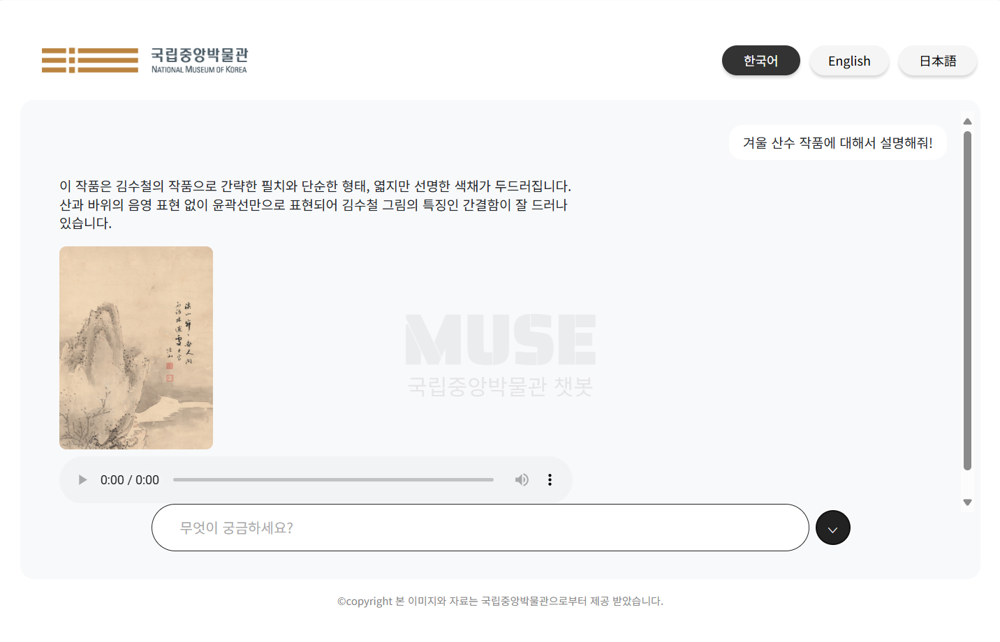

AI Docent MUSE란?
MUSE는 유물을 설명하는 AI Docent입니다. 질문을 입력하면 유물에 대한 정보, 이미지, 음성 해설까지 제공해드립니다. 한국어, 영어, 일본어를 지원하여 누구나 쉽고 흥미롭게 전시를 즐길 수 있습니다.

사용 시 주의사항
1. 유물에 관련된 질문만 물어봐주세요.
2. 질문은 명확하고 간단하게 입력해주세요
(예시: 이 유물은 언제 만들어졌나요?)
3. 사진은 일부 유물에 한하여 제공됩니다.
4. 음성 해설은 원할 때 언제든 재생가능합니다.